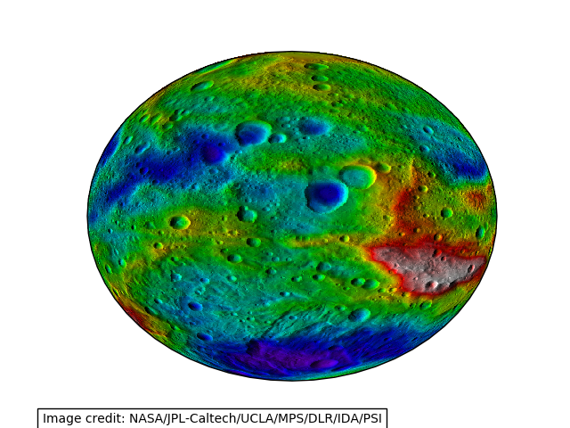

Note
Click here to download the full example code
Displaying data on an eccentric ellipse¶
This example demonstrates plotting data on an eccentric ellipse. The data plotted is a topography map of the asteroid Vesta. The map is actually an image, which is defined on an equirectangluar projection relative to an ellipse with a semi-major axis of 285 km and a semi-minor axis of 229 km. The image is reprojected on-the-fly onto a geostationary projection with matching eccentricity.
try:
from urllib2 import urlopen
except ImportError:
from urllib.request import urlopen
from io import BytesIO
import cartopy.crs as ccrs
import matplotlib.pyplot as plt
import numpy as np
from PIL import Image
def vesta_image():
"""
Return an image of Vesta's topography.
Image credit: NASA/JPL-Caltech/UCLA/MPS/DLR/IDA/PSI
Returns
-------
img : numpy array
The pixels of the image in a numpy array.
img_proj : cartopy CRS
The rectangular coordinate system of the image.
img_extent : tuple of floats
The extent of the image ``(x0, y0, x1, y1)`` referenced in
the ``img_proj`` coordinate system.
"""
url = 'https://www.nasa.gov/sites/default/files/pia17037.jpg'
img_handle = BytesIO(urlopen(url).read())
raw_image = Image.open(img_handle)
# The image is extremely high-resolution, which takes a long time to
# plot. Sub-sampling reduces the time taken to plot while not
# significantly altering the integrity of the result.
smaller_image = raw_image.resize([raw_image.size[0] // 10,
raw_image.size[1] // 10])
img = np.asarray(smaller_image)
# We define the semimajor and semiminor axes, but must also tell the
# globe not to use the WGS84 ellipse, which is its default behaviour.
img_globe = ccrs.Globe(semimajor_axis=285000., semiminor_axis=229000.,
ellipse=None)
img_proj = ccrs.PlateCarree(globe=img_globe)
img_extent = (-895353.906273091, 895353.906273091,
447676.9531365455, -447676.9531365455)
return img, img_globe, img_proj, img_extent
def main():
img, globe, crs, extent = vesta_image()
projection = ccrs.Geostationary(globe=globe)
fig = plt.figure()
ax = fig.add_subplot(1, 1, 1, projection=projection)
ax.imshow(img, transform=crs, extent=extent)
fig.text(.075, .012, "Image credit: NASA/JPL-Caltech/UCLA/MPS/DLR/IDA/PSI",
bbox={'facecolor': 'w', 'edgecolor': 'k'})
plt.show()
if __name__ == '__main__':
main()
Total running time of the script: ( 0 minutes 6.717 seconds)